UC Berkeley team project, January to May 2026
A trash can that sorts its own waste
Drop an item in. A camera photographs it, a ResNet-18 image classifier calls it trash or recycling, and two servos tip the platform so the item rolls into the right bin. Fourteen students from five majors designed, built, and trained it in one semester.
- Validation accuracy
- 95.2%
- Training images
- 15,000
- Enclosure (in)
- 15×30×20
- Students
- 14
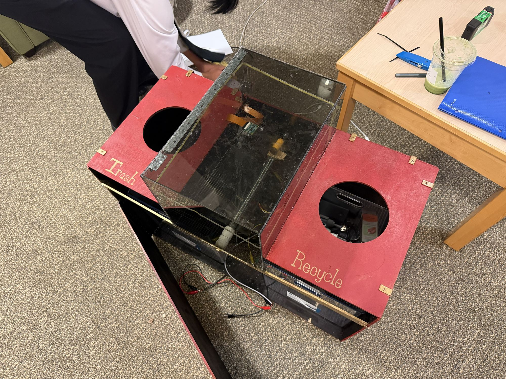
How it sorts
Each item takes about the same path. Pick one to send through the system.
- 1
Item dropped in
The item lands on a hinged platform inside the clear intake chamber.
- 2
IR beam breaks
An infrared break-beam sensor at the intake tells the Raspberry Pi something arrived.
- 3
Camera takes a photo
A Pi camera mounted in the lid captures one image of the item.
- 4
Model classifies it
The image goes to a FastAPI server running the ResNet-18 model, which returns a class and a confidence score.
Pick an item above.
-
5
Platform tilts
RecyclingConfident it's recyclableTrashTrash, or confidence below the threshold
Low-confidence calls go to trash on purpose. One wrong item in a recycling bin can contaminate the batch, so the system only sends items to recycling when it is sure.
Hardware
Gravity does the moving. The servos only set the platform's angle.
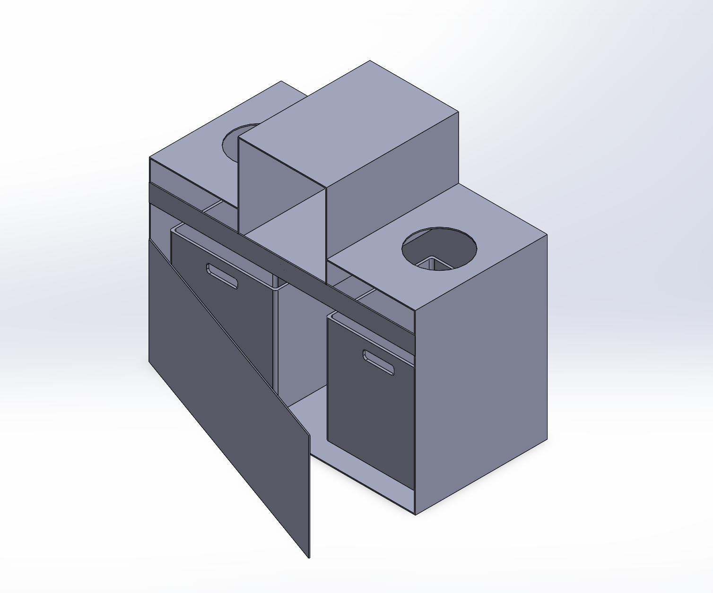
Mechanism
Waste falls through the top intake onto a platform hinged along one axis. After the model decides, the Raspberry Pi sends a PWM signal to two 25 kg·cm servos mounted at the base of the platform. They rotate it to a set angle toward one side, and the item rolls off into that bin.
We modeled the enclosure first, then fit the intake chamber and pivoting platform inside it, and adjusted clearances in CAD until the platform could swing both ways without hitting the walls.
Parts
- ControllerRaspberry Pi
- SensingIR break-beam sensor, Pi camera
- Actuation2 × 25 kg·cm servos on PWM
- PowerUSB power bank
- EnclosurePolycarbonate intake, painted wood frame, 15 × 30 × 20 in
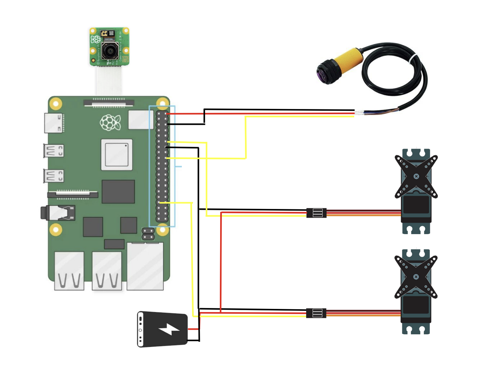
Electronics
Everything runs from one Raspberry Pi. The camera connects through the Pi's ribbon port and sits in the lid above the intake. The IR break-beam sensor and both servos connect to GPIO pins, and each servo gets power, ground, and a PWM signal line.
The parts are placed along the path an item takes: the sensor where it enters, the camera directly above where it lands, and the servos under the platform it lands on.
The model
A pretrained ResNet-18, fine-tuned for two classes.
Training
We started from ResNet-18 with ImageNet weights, which learns faster from a limited dataset than training from scratch. The 15,000 images came from a public Kaggle dataset, split 12,750 for training and 2,250 for validation.
Every image was resized to 224 × 224 and normalized with the ImageNet mean and standard deviation. Random flips, rotations, and color jitter were added during training so the model would handle items at any angle and in different lighting. We trained with the Adam optimizer and cross-entropy loss for 10 epochs.
Running it on the bin
The Pi sends each photo to a FastAPI server (served with Uvicorn) that runs the model and returns the class and confidence. The Pi reads the result and drives the servos.
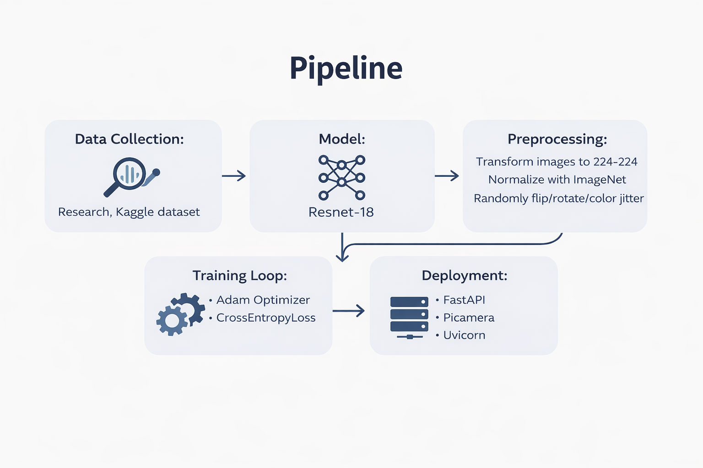
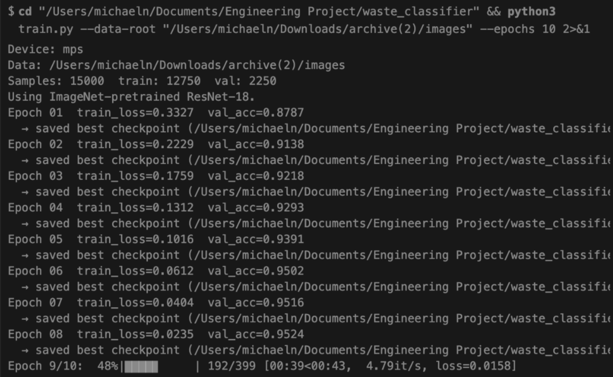
Odor control and materials
The chemical engineering side: keeping a closed bin clean, and picking what to build it from.
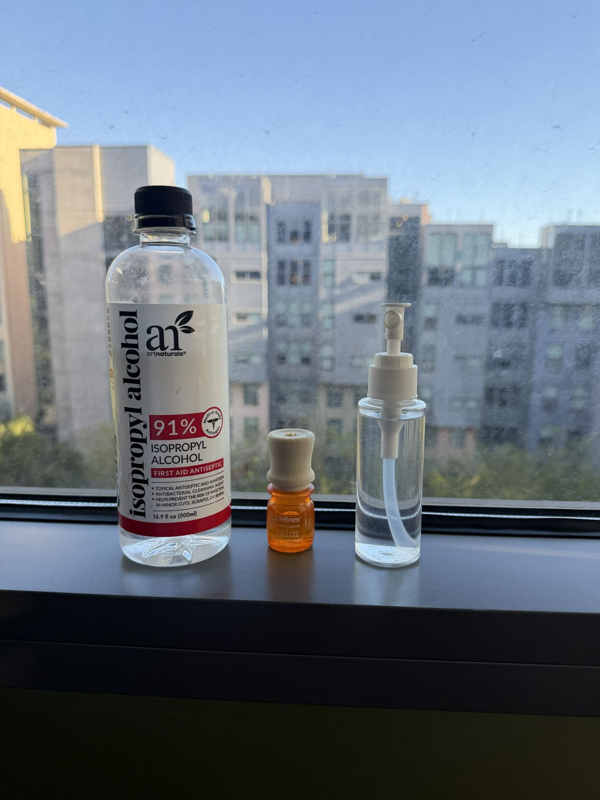
Disinfectant
We diluted 91% isopropyl alcohol to 70%. At 70%, the water in the mix slows evaporation and helps the alcohol get into cells and denature their proteins, so it disinfects better than the stronger stock. We tested several dilutions to balance cost against cleaning performance.
Scent
Our first try mixed fragrance into the alcohol. It evaporated with the alcohol within minutes and the smell didn't last. We switched to an oil-based scent, which stays in the enclosed bin much longer.
Materials
The intake chamber is polycarbonate. It holds up to moisture from wet waste and lets the camera see in. The frame and bins are wood, which was much faster to cut and change while we were still prototyping.
Building it
From the first CAD mock-up to a working demo.
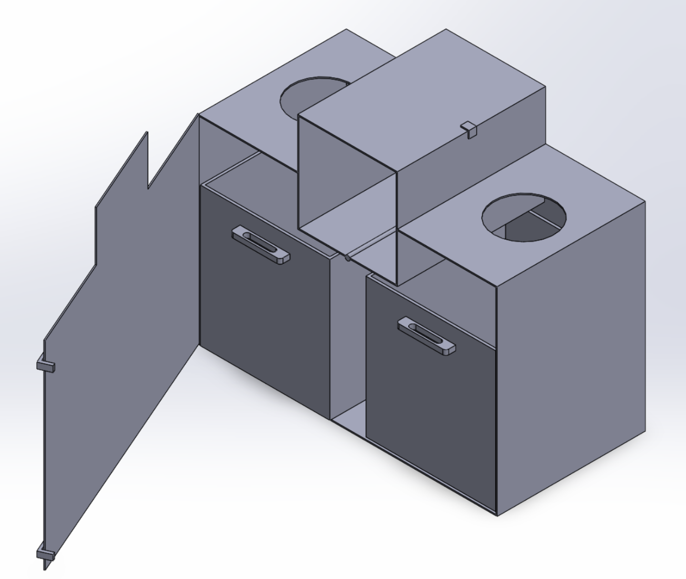
First CAD mock-up 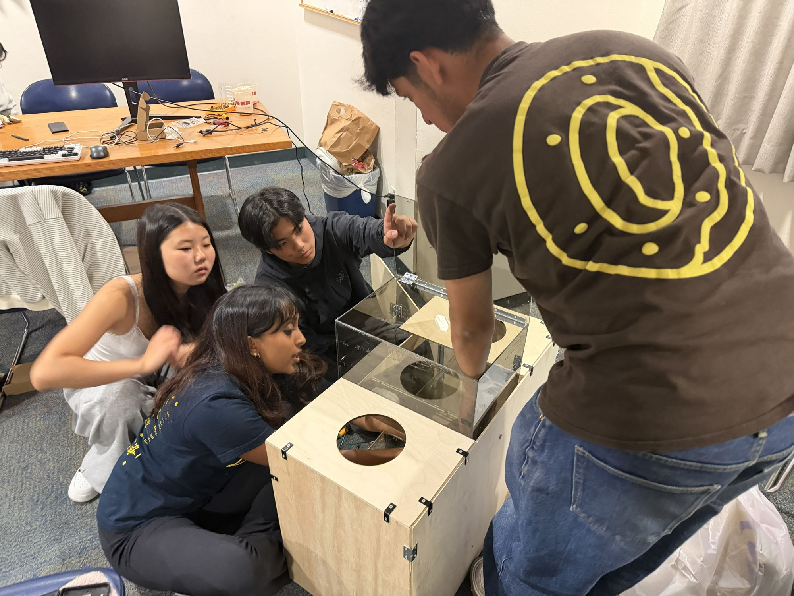
Assembling the enclosure 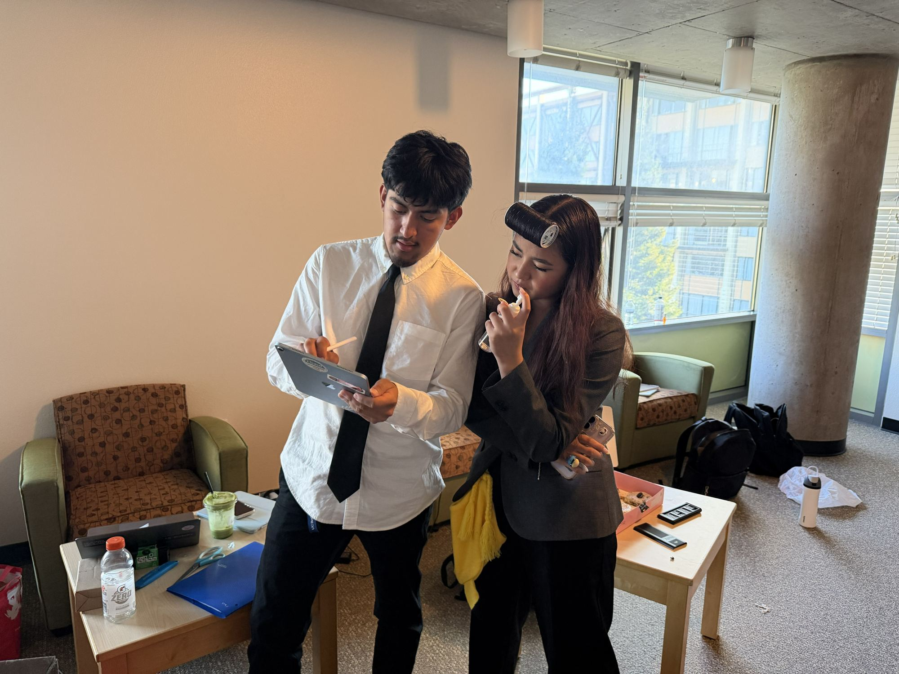
Working out the build plan 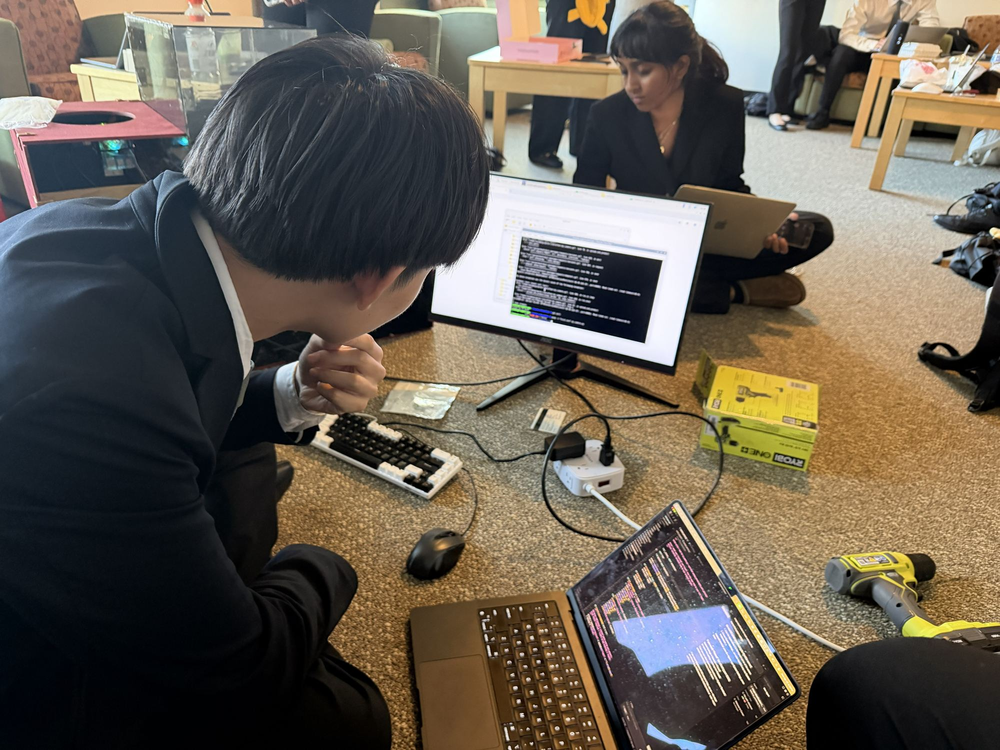
Training the model 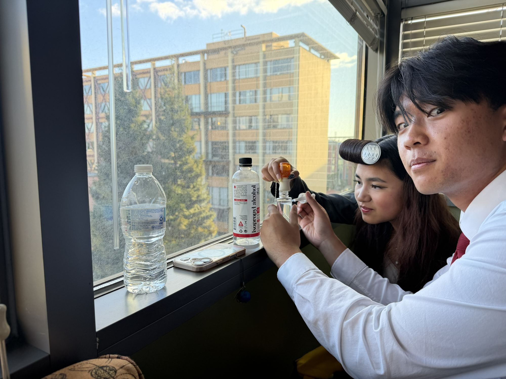
Mixing the disinfectant 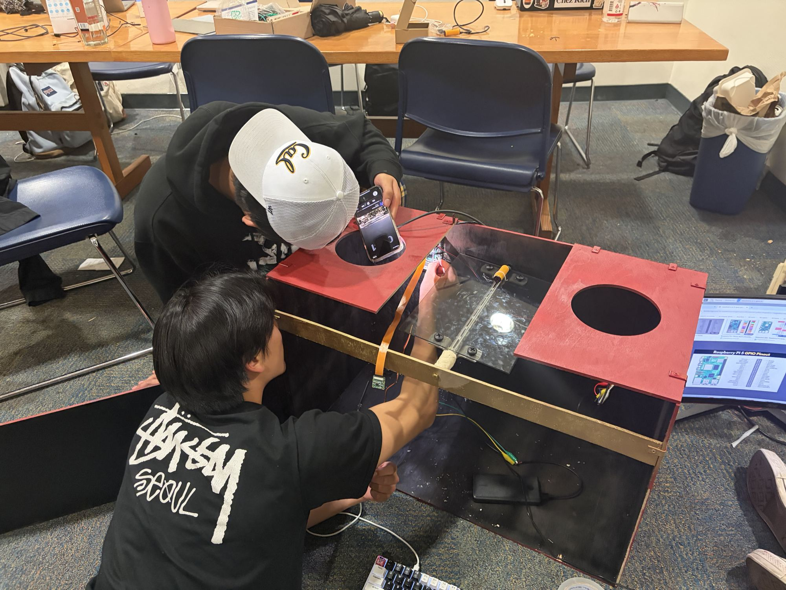
Wiring the camera and sensors
Videos
Demo
Second demo
Assembly timelapse
Team
Fourteen UC Berkeley students in chemical, mechanical, and civil engineering, EECS, and data science.
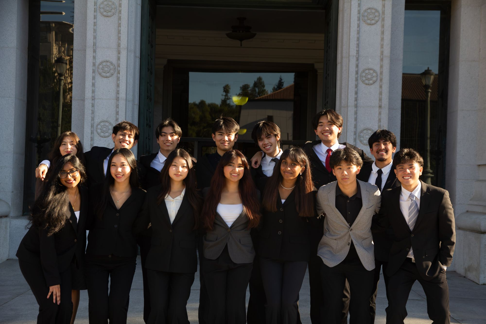
- Aiden ReyesEECS, 2029
- Angel RamirezEECS, 2029
- Boyi HuMechanical Engineering, 2029
- Deetya SrivatsavayaMechanical Engineering, 2029
- Genevieve MoralesChemical Engineering, 2029
- Jerry ZhangData Science + Statistics, 2028
- Johnson ToChemical Engineering, 2029
- Lana MoraledaChemical Engineering, 2029
- Megan ZhangData Science, 2029
- Michael NguyenData Science, 2029
- Natasha NirmalData Science, 2028
- Nick DengEECS, 2029
- Victor NolascoCivil Engineering, 2029
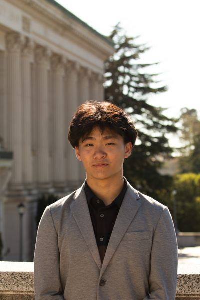
Wyndham WooData Science, 2029